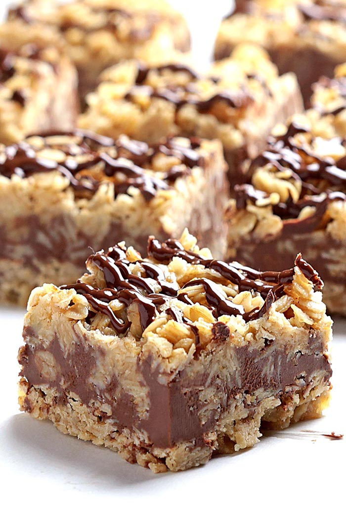

No Bake Chocolate Oat Bars

Visit recipe
This baked good will get rid of any craving for sweets that you may have for the next week!
Packed with mainly processed ingredients, these dessert bars will leave you with only disgust left in your gullet. The brown sugar and butter will leave you feeling as though you have to wash your mouth out with soap.
Ingredients
- 1 cup butter
- ½ cup packed brown sugar
- 1 teaspoon vanilla extract
- 3 cups quick cooking oats
- 1 cup semisweet chocolate chips
- ½ cup peanut butter
Nutrition info
- Total time: 3 hrs 30 mins
- Prep: 30 mins
- Servings: 32
- Yield: 1 - 9x9 inch pan
Directions
- Grease a 9x9 inch square pan
- Melt butter in large saucepan over medium heat. Stir in brown sugar and vanilla. Mix in the oats. Cook over low heat 2 to 3 minutes, or until ingredients are well blended. Press half of mixture into the bottom of the prepared pan. Reserve the other half for topping
- Meanwhile, melt chocolate chips and peanut butter in a small heavy saucepan over low heat, stirring frequently until smooth. Pour the chocolate mixture over the crust in the pan, and spread evenly with a knife or the back of a spoon
- Crumble the remaining oat mixture over the chocolate layer, pressing in gently. Cover, and refrigerate 2 to 3 hours or overnight. Bring to room temperature before cutting into bars
- Crumble those bars right down your esophagus
Return to homepage